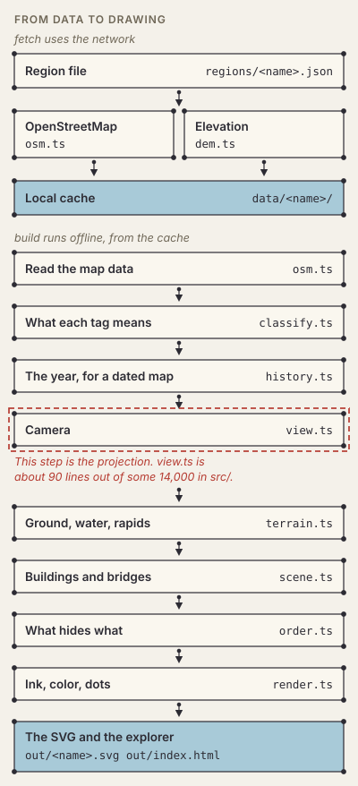
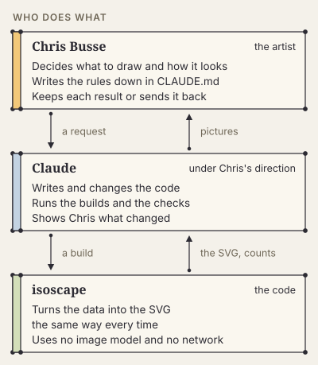
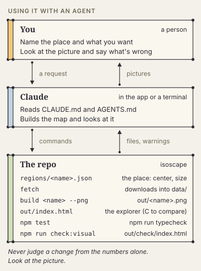
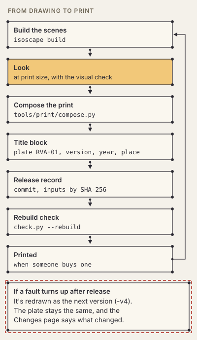

Questions and answers
Drafted with Claude; see the artist statement.
Claude and the code
Does Claude handle the projection, or the map geometry too?
Claude wrote all of the code, under my direction, and the code does both. The geometry doesn't come from Claude, though. Streets, water and building outlines are OpenStreetMap. The ground is USGS lidar. In Richmond the building dates come from the city's year-built records, and the lost buildings are traced from Sanborn fire-insurance maps at the Library of Congress. On Gwynn's Island some buildings come from Microsoft's machine-learned footprints.
The projection is a small part of the code. It's the camera step, view.ts, about 90 lines
out of some 14,000. The rest reads what each OpenStreetMap tag means, guesses heights nobody
mapped, finds the river's surface and rapids in the lidar, raises the bridges, works out what
hides what, and paints the ground in strips from the back of the frame forward.

Builds are deterministic. The same data and the same commit give the same SVG, byte for byte.
build doesn't use the network, and no model is asked anything while a map is drawn.
Is any of this AI-generated imagery?
No. No image model draws anything. You can rebuild any map from its commit and its data and get the same file.
A model, or Claude's judgment, does show up in the data in four places.
- Microsoft's building footprints were traced from aerial imagery by Microsoft's model. I use them only on Gwynn's Island, only where OpenStreetMap has no building, with the model's height where it gave one.
- The woods, fields and wetlands on Gwynn's Island come from the USGS National Land Cover Database, which is classified from satellite imagery at 30 m.
- To place each Sanborn sheet on the ground, Claude read two or three named street corners off the scan and matched them to OpenStreetMap intersections. A third corner checks the first two, and the city's block outlines are laid over the sheet to check the fit. Two 1905 sheets put 31 buildings on the Capitol lawn, so they're left out. The tracing itself is image processing on the maps' printed colors, with no model.
- Claude wrote the curated history from published sources: lost landmarks, the dates of tall buildings, and the rules that date roads, rail and water. Each item cites its source or is marked approximate.
There's more in Measured, inferred, guessed and Time.
What do I do, and what does Claude do?
I decide what to draw and what it should look like. Claude writes the code, runs it, and shows me the result. I keep it or send it back. The code computes the drawing.

A lot of my part is writing down what a good map looks like. Those rules are in CLAUDE.md, so
they carry from one session to the next. I wrote more about working this way in the
artist statement.
What happens when something is wrong?
It gets fixed in the code and the map is drawn again. A print that's already for sale is never changed in place. It's redrawn as the next version, and the Changes page says what changed and when. Version 4 of Richmond, 1925 put back a missing span of the Mayo Bridge and took out traced buildings that were standing in the river.
Measured, inferred, guessed
What is measured, what is inferred, and what is guessed?
![Where the geometry comes from. Seven sources, each with what it gives and a mark: solid for measured, a ring for inferred, a dashed ring for guessed. OpenStreetMap: streets, rail, water, parks and outlines, measured; tagged heights, measured; other heights, guessed. USGS 3DEP lidar: the ground, measured; river surface, rocks, rapids and shoreline, inferred. Microsoft footprints and NLCD land cover, on Gwynn's Island: inferred. Richmond's year-built records: measured. Sanborn maps: lost buildings, inferred; their heights, guessed. Bridge deck heights: guessed.](faq-sources.svg)
- Measured. The ground, which is 1 m lidar in Richmond, and whatever OpenStreetMap has mapped, including heights where someone tagged them.
- Inferred. The river's surface, the rocks and the rapids, and the shoreline, all read from the lidar. Also the outlines traced from Sanborn maps.
- Guessed. Any height nobody mapped. That's about 40% of the buildings in downtown Richmond and a little over half around Gwynn's Island. Bridge decks follow rules of thumb, and every traced historic building's height comes from its material.
Each map's "How this view was made" tab gives its own count.
Why do some buildings look the wrong height?
Their heights are guesses. A building with no height or building:levels tag gets 8 m for a
house, 16 m for apartments and 13 m for an office (Buildings).
Real heights from lidar are first on the roadmap.
The historic years
How accurate are the historic years?
They're rough. Buildings are missing, some sit a few meters off, and every lost building's height is a guess from its material.
A dated Richmond map has four kinds of thing in it:
- buildings standing today, each from the year it went up (a curated date, else OpenStreetMap's, else the city assessor's);
- lost buildings traced from the 1886, 1895, 1905, 1924–25 and 1950–52 Sanborn maps;
- a short list of things that are gone, like a filled canal basin, a burned district and torn-down landmarks, each with its sources;
- rules that date the roads, rail and water, each with a source or marked approximate.
Downtown in 1900 had far more buildings than the 1900 map shows. Assessors round, so a lot of buildings are dated 1900 or 1910. The ground is today's lidar in every year, so the I-95 cut is there in 1737. A traced building that couldn't have stood where it lands is left out whole. In 1925 that's 27 in the water, 61 on viaducts or track, and 62 under ground that's higher today.
Time has the whole method. Fixes go on the Changes page.
How a map gets made
How does a map get made, step by step?
- Write a region file,
regions/<name>.json, with a center, a width and a depth in meters. fetchdownloads OpenStreetMap and the elevation intodata/<name>/. Nothing else touches the network.builddraws the SVG from that cache.- Look at it in the explorer,
out/index.html, next to the last build. - For a print, add the title, credit line and title block, write the release record, and run the rebuild check.
node bin/isoscape.js fetch richmond-downtown
node bin/isoscape.js build richmond-downtown-topo --pngWhy isometric, and why dots and lines?
Isometric lets you take in a whole neighborhood at once. The dots and lines come from my other project, dotscene. Every edge is an inked line, and every corner gets a dot. I got the idea of an isometric city drawn from open map data from Justin Chavez's Isometric SF.
Making your own
Can I make my own map? What do I need?
Yes. You need Node 22.18 or newer, and rsvg-convert if you want PNGs. There are no other
packages to install. Write a region file for your place, then run fetch and build. The
README has the commands and the settings.
Terrain works anywhere. It's USGS lidar in the US, national models in France, Switzerland and Japan, and Copernicus everywhere else. The code is MIT-licensed, and a map you make is yours. Credit OpenStreetMap wherever you show it (About).
How do I use it with Claude or another coding agent?
Open a chat with Claude and say "Use the GitHub repo busse/isoscape to make an isometric map of your place." It clones the repo, writes the region file, fetches the data and builds the map. That takes a few minutes.

The rules for working in the repo are in CLAUDE.md. They cover the conventions, where to
change what, the known limits, and the loop. AGENTS.md has notes for agents helping someone
use isoscape. Codex, Cursor and other agents that read AGENTS.md get those too, and
GEMINI.md points Gemini to it.
The loop says never to judge a change from the numbers alone. Build it, look at the picture,
and compare it with the last build (press C in the explorer) before you keep it.
Say what you want to see and ask for a picture back. "The bridge in the middle ends in the air" is enough to start with.
How is the codebase kept in order when an AI writes most of it?
With rules written into the repo, and checks that enforce them.
npm run typecheckruns the TypeScript compiler, held to syntax Node can run directly. No enums, no namespaces.npm testruns about 170 tests. One checks that every link in these pages goes to a real section. The Python tools have their own tests.- Before a change to the drawing code goes out,
npm run check:visualbuilds the seven views behind the prints and compares crops of each with an approved baseline. A crop fails if more than 0.02% of its pixels change. The baseline is approved again only after a person has looked at every change. - Every color and line weight is in
palette.tsand nowhere else. buildnever uses the network. One bad OpenStreetMap tag must never break a build.- When a number in the code changes, How it's made changes in the same commit.
- Every design for sale has a release record with the commit, every input's SHA-256, and a
frozen copy of its data.
check.py --rebuildrebuilds each scene from those and checks that it comes out byte for byte the same. - Plate numbers are permanent and never reused. A fix is a new version, listed on the Changes page.
- Every build is archived with its commit, and any two can be compared side by side.
What data does it use, and under what licenses?
- OpenStreetMap, © its contributors, under the Open Database License (ODbL).
- The USGS 3D Elevation Program in the US, public domain. Elsewhere IGN, swisstopo, GSI, Copernicus or Terrain Tiles, each with its own credit.
- The National Land Cover Database (NLCD 2021), public domain.
- Microsoft's Global ML Building Footprints, under the ODbL, where a map uses them.
- Sanborn fire-insurance maps of Richmond, digitized by the Library of Congress.
- The City of Richmond's year-built records, from its open data.
The code is MIT. My published maps are © Chris Busse under CC BY-NC 4.0. You can share and adapt them with credit, but you can't sell them. Every credit is in About.
Prints
What am I buying when I buy a print?
A print of one of my maps, printed when you order it. The file it's printed from has a release record, so I can make it again exactly. Prints are in the holiday shop at chrisbusse.com through December 31, 2026, and buying one supports the project.

What does the title block on a print mean?
It's the small block in the bottom-right corner. It has the isoscape cube, "drawn by Chris Busse", the collection, set and piece, the plate number, the version, the year it was drawn, the point the view is centered on, and the direction it faces (Plates and the title block).
The plate never changes. RVA·01 is Richmond, 1925. The version goes up each time I redraw it.
What happens if a map I bought is corrected later?
Prints ordered after the fix use the new version. Yours has its version printed on it, so the Changes page will tell you what's different.